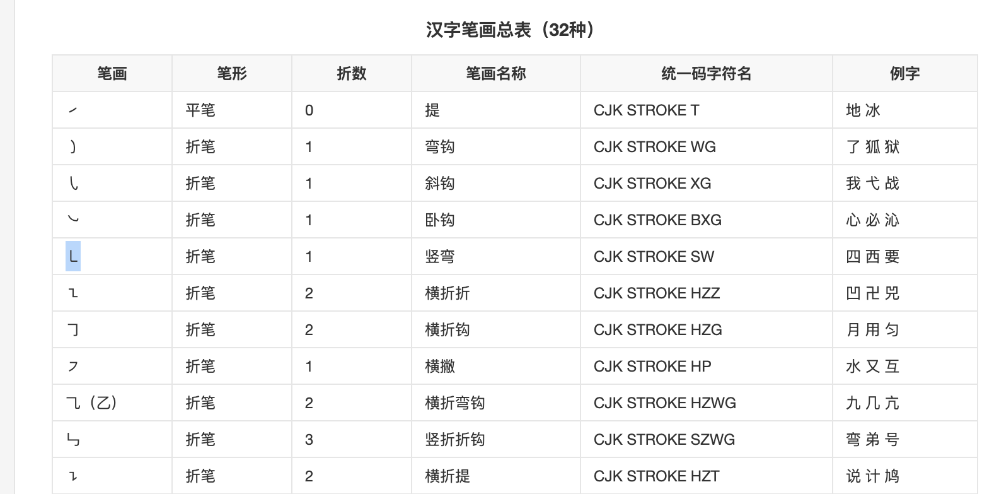
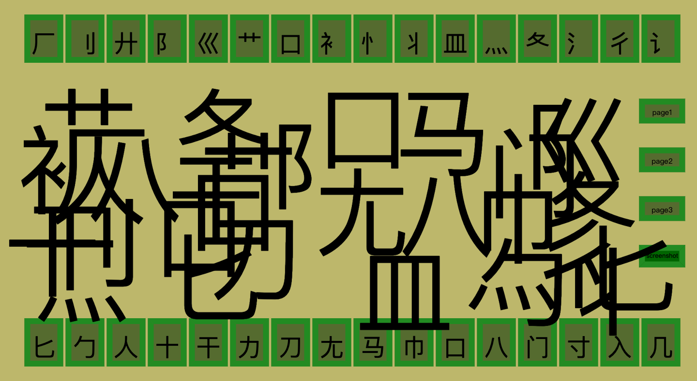

<html>
    <head>
        <title>
            Final Project
        </title>

        <meta http-equiv="Content-Type" content="text/html; charset=utf-8">
        <link rel="stylesheet" href="documentation.css">
        <link href="https://fonts.googleapis.com/css2?family=Noto+Serif+HK&family=Noto+Serif+JP&display=swap" rel="stylesheet">
    </head>

</html>

<body>

    <h1> Chinese Keyboard Documentation</h1>

    <h2> 🤯 Inspiration</h2>

    <p>
        The first inspiration came from the reading in week 11, the medium is the massage, where Marshall brought up some characteristics of Western languages, such as order and continuity. So the question arose, what are the characteristics of Chinese as a non-alphabet-based language?
        <br><br>
        I've wanted to do a project about Chinese for a long time. Since I'm in a relationship with a non-Chinese speaker, I started to observe Chinese from a non-native speaker's perspective. There's always an impression of Chinese of being too hard to learn because it's a pictogram language. It always makes me wonder, even if it is a non-alphabetic language, is Chinese really endless, with no limits or restrictions? This led to my idea: since Chinese is a hieroglyphic language, it might be better to start from a visual rather than an auditory perspective. What if we think of strokes as the alphabet of Chinese?</p>

        <h2>🗺 Wireframe</h2>

        <p>
        These are my initial design of wireframe, which mainly have been realized. The whole project is divided into three pages. The first page is an introduction to the Chinese radials, using strokes to "spell out" the "root words" -- radicals. </p>

        

        <p>
        On the second page, I wanted to make the project more interesting. So I chose to use a design technique of Chinese fonts, that is, using patterns instead of strokes, thus giving radicals a sense of design.</p>
        
        
        
        <p>The third page is the most interesting page in my opinion. The user can create Chinese characters through the "alphabet". Since the strokes themselves do not have meaning, if I use them as the alphabet, it seems to be no different from drawing. Therefore, I chose to use radicals as the alphabet, so that the characters could be spelled out like real characters and have meanings.
        </p>

        

     <h2> 🔮 Process</h2>

     <h3> 🚜 Source Materials</h3>
     <h4> 🧩 Strokes & Radicals</h4>
     <p>Clearly the first step was to find the materials of radicals and strokes. My first try was finding the images of strokes. But I couldn't find an image that contains all the strokes. And I really didn't want my terrible handwritting to be the first thing some users see when they try to have fun with Chinese. </p>

     <p>Then I tried to directly search for strokes to see what else I could find. I found this:</p>
     
     <p>A form that contains all the strokes which were able to be copied. That's right, strokes are also characters!</p>

     <h4> 🎭 Patterns</h4>

     <p>I drew all the patterns for the second page cause I wanted them to be similar to the strokes in shape.</p>
     

     <h4>🛼 Json</h4>
     <p>Not sure if this can be counted as source materials or not. But I really tried to use Json to build my data base. Because for my page 2, all strokes have their own related patterns, and for my page 3, all radicals have their own related translations. I thought it would be eaiser to build a json data base instead of directly write in JS file.</p>

     

     <p>I tried several ways to link the json file to js file. And finally one way that I found on Youtube works. But for some reason it only worked in the fetch and then function. So my whole js file is nearly in one fetch and then function :P</p>

     

     <h3>📚 Libraries</h3>
     <h4>🗝 Interactjs</h4>
     <p>
     The first library I tried to find was a dragging library. Since my project needed to be able to drag things around to "spell" Chinese characters, a dragging library would help a lot. I first tried to use draggable. But I tried for an hour and didn't find a way to use it. So I gave up and tried another one, which was my final option -- <a href=" https://interactjs.io/">Interactjs</a>. It helped me with dragging elements around and resizing elements.
    </p>

    <h4>🖼 Html2canvas & Canvas2Image</h4>
    <p>The second thing I wanted library to help me was taking a screenshot. I first tried to use an API called getDisplayMedia, which didn't work so well since it always ask for permissions. Then I used Html2canvas & Canvas2Image to create canvas and changing them to image for user to download.</p>

    

    <p> There was a bug for the second page that strokes can't form in the right way. I researched on it and tried different method including changing strokes to Unicode. But then I realized it was because of the library itself. So I changed to a new version of the library and it finally works. </p>
    

    <h3>🕹 Interactive Designs</h3>

    <p>I did try to have a lot interactive functions for this project to make it more flexible 〰️ </p>

    <h4> 🪝 Detect function for the right place</h4>
    <p>The first challeng I had was trying to be able to detect if the stroke has been put to the right place. It took me so long to find the right way to represent the positions of the original answer and the strokes that can be moved. I tried "event.pageX", "offsetLeft", "event.clientX", "event.target.data-x"...Finally found the right ones after so many console.log().</p>
    

    <h4> 🏋️‍♀️ Resize the strokes/images</h4>
    <p>Tiya suggested me to use a slider to change the size of strokes/images. I tried and it was not that successful. Considering I have to move again to see the result of the slider. I decided instead to use the resize function of the interactjs library to change the size of the div. And then link the size of strokes/images to divs to change their sizes.</p>

    <video controls>
        <source src="documentation_assets/video.mp4" type="video/mp4">
      </video>

    <h4>🚨 The color of hover</h4>
    <p>Because I found it could be hard to know which stroke/pattern the user was controlling when they all overlay. I used the mouseOver function to make it red. I also use the red effect to be the condition showing that "this is the selected element".</p>
    

    <h4>🥊 Backspace/Shift</h4>
    <p>I got the suggestion from user test that I should use backspace to delete the elements. (Before that I used double click). I also wanted the user to be easier to find the div to resize elements. So the function that was needed was finding the key that is pressed. Again..tried so many ways before I could successfully do it.</p>
    
    <br>
    

    <h4>🚏 Hover for explanation</h4>
    <p>This function brought a mental breakdown. The main problem was that the radicals from page 3 was random. So the order of the array can't be the direction of "which radical I am hovering". So the meaning and the radical didn't match for a time. And then the explanations were so long that they flew out of the page. Word-break is life saver.</p>

    

    <h4>📀 Instructions</h4>
    <p>Instruction is always my last thing. Because I want the users to be able to try and explore the project, I really don't like to have instructions on the page. But this projects needs background informations and function instructions too much. So I decided to use a css-based pop up window to put the instructions in.</p>

    <h3> 🗻 Visual Design</h3>
    <h4>🛎 Buttons</h4>
    <p>Again!! The visual misleading effect! By changing the border color, the buttons look like they are pressed inside when being hovered. </p>
    

    <h4>🕹 Cursor</h4>
    <p>I changed the pattern of my cursor to make my laptop more attractive during final time. Then it occured to me that I could also change the cursor of the project. I also tried to use a GIF for cursor but it didn't move :(</p>

    <h4>⌛️ Fonts</h4>
    <p>I coudn't stand the version without fonts, cause that's not what Chinese strokes look like even on computer. I tried to find fonts, but I couldn't find any font that can have all the strokes recognized. So I ended up using different fonts for different strokes :) And they look like same font.</p>
    

    <h2> 💞 User</h2>

    <h3> ❤️‍🔥 User feedback</h3>

    <p>Despite backspace and slider that I mentioned earlier. I also added sound effect to make it more immersive.</p>
    <p>There were suggestion of adding the function of pronounciation. Since the project is about seeing the strokes and radicals from visual perspective to be the alphabet, pronounciation may be a bit off topic. More importantly, they don't even have pronounciations, but only have names. But I found this suggestion thought-provoking, because it reflects precisely the difference between the thinking of native speakers of the alphabet-language and that of native speakers of pictographs-language.</p>
    <p>There were also interesting feedback saying the page 3 was like meant to be hard for user to spell a real Chinese character, which increases the artistry of the work. I will call it a bonus interpretation.</p>

    <h3> 💚 User test Album</h3>
    
    <br>
    
    <br>
    


</body>